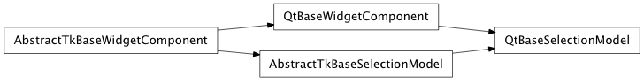

Bases: enaml.components.base_widget_component.BaseWidgetComponent
The base class for item selection models.
Updated when the current ModelIndex changes. Gets a 2-tuple of (old ModelIndex, new ModelIndex)
Updated when the current selection changes. Gets a 2-tuple of (deleted items, added items). Each selection is a list of (top_left ModelIndex, bottom_right ModelIndex) tuples specifying rectangular ranges of selected cells.
The selection mode.
What kinds of things can be selected.
Overridden parent class trait
Set the current ModelIndex.
This is the cell used for keyboard focus and is usually set when the user clicks a cell. This may be independent of the selection. It is frequently rendered with a dashed border.
| Parameters: | index (ModelIndex) – The index to make current. |
|---|
Set the current selection.
| Parameters: |
|
|---|
Get the current selection.
| Returns: | selection (list of (ModelIndex, ModelIndex) tuples) – Each tuple is an inclusive range specifying a bounding box for a given selection range. |
|---|
alias of __NoInterface__

Bases: enaml.backends.qt.qt_base_widget_component.QtBaseWidgetComponent, enaml.components.base_selection_model.AbstractTkBaseSelectionModel
Qt implementation of the BaseSelectionModel.
Create a space for the underlying QItemSelectionModel.
We don’t want to actually get it yet, since it depends on the AbstractItemModel being set on the parent, which won’t happen until the initialize() step.
Converts a list of tuples of Enaml ModelIndex ranges into a QItemSelection.